こんにちは、Japan Developer Support Core チームの松井です。今回は、C# を使用して MCP (Model Context Protocol) サーバーを作成する方法について紹介します。公式ドキュメントにもチュートリアルがあるものの、最小限の内容ですので実用性が分かりづらいかもしれません。本記事では、WinDbg などが使用するデバッガー エンジンを扱う MCP サーバーを Visual Studio 2022 + C# で作成し、AI エージェントにクラッシュ ダンプ ファイルを解析させるまでの流れを紹介します。
なお、Visual Studio 2022 の MCP サーバー関連の機能は本記事執筆時点ではプレビュー機能となっていますので、将来のバージョンで変更される可能性があります。
MCP サーバーとは
MCP サーバーは、Model Context Protocol (MCP) に準拠した AI エージェント用のサーバーで、AI が外部のツールやデータソースなどのリソースと安全かつ柔軟に連携できるようにするための仕組みです。AI は自然言語で質問に答えることは得意ですが、実際にファイルを操作したり、API を呼び出したり、システムにアクセスしたりすることはできません。そこで MCP サーバーが AI の手足となり、AI が現実の操作を実行するためのインターフェイスを提供します。アーキテクチャの詳細は以下のページをあわせてご覧ください。
MCP サーバーの実装方法
MCP は JSON-RPC 2.0 をベースにしたプロトコルです。一から MCP サーバーを実装するのは大変ですが、様々な言語向けにライブラリが提供されていますので、それらを利用することで比較的簡単に MCP サーバーを構築できます。プレビュー版となりますが、C# 向けには Model Context Protocol C# SDK が提供されており、これを使用することで MCP サーバーを簡単に作成できます。また、Model Context Protocol C# SDK を使用するためのチュートリアルは以下のページにあります。
C# を使用して最小限の MCP サーバーを作成し、NuGet に発行する
MCP サーバーの実装例
前提条件
- .NET 8
- Visual Studio 2022 version 17.14.12 以降
- Visual Studio Code version 1.103.1 以降 (任意)
- GitHub Copilot Chat
1. プロジェクトの作成と設定
まずは MCP サーバーのプロジェクトを作成します。今回 MCP サーバーはコンソール アプリケーションとして実装しますが、WPF アプリケーションや ASP.NET Core アプリケーションなど、他のアプリケーション タイプでも MCP サーバーを実装できます。以下の手順ではコンソール アプリケーションを作成します。
Visual Studio 2022 を起動します。
[ファイル] - [新規作成] - [プロジェクト] を選択します。
プロジェクトの種類で C# の [コンソール アプリ] を選択します。[コンソール アプリ (.NET Framework)] は違う種類ですので注意してください。名前は任意で構いませんが、本記事では “McpServerForDbgEng” とします。フレームワークのバージョンは [.NET 8] またはそれ以降のバージョンを指定します。
プロジェクトを作成したら、ソリューション エクスプローラーでプロジェクトを右クリックし、[プロパティ] を選択し、[ターゲット OS] を [Windows]、[サポートされている OS バージョン] を [10.0.17763.0] またはそれ以降のバージョンに変更します。この設定は MCP サーバーを実装するだけであれば不要ですが、デバッガー エンジンのライブラリを参照するために必要になります。
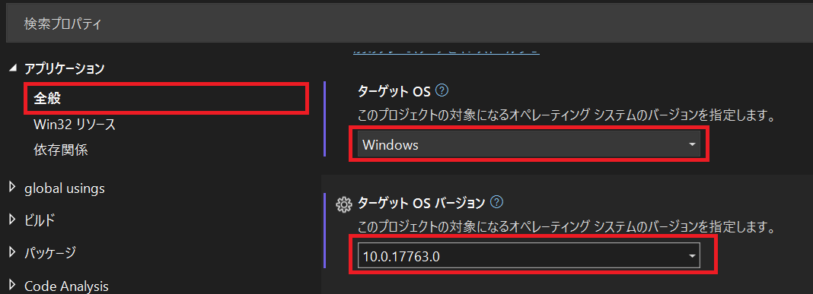
ソリューション エクスプローラーでプロジェクトをダブルクリックし、エディターでプロジェクト ファイルを開いて
<UseWindowsForms>true</UseWindowsForms>を追加します。これは MCP サーバーの実装に必要な設定ではありませんが、今回はデバッガー エンジンの利用を簡潔に済ませるために利用します。1
2
3
4
5
6
7
8
9<Project Sdk="Microsoft.NET.Sdk">
<PropertyGroup>
<OutputType>Exe</OutputType>
<TargetFramework>net8.0-windows10.0.17763.0</TargetFramework>
<ImplicitUsings>enable</ImplicitUsings>
<Nullable>enable</Nullable>
<UseWindowsForms>true</UseWindowsForms>
</PropertyGroup>
</Project>
2. NuGet パッケージの追加
NuGet パッケージ マネージャーを使用して、MCP サーバーの実装に必要なパッケージを追加します。
[ソリューション エクスプローラー] でプロジェクトを右クリックし、[NuGet パッケージの管理] を選択します。
[参照] タブで [ModelContextProtocol] を検索し、[ModelContextProtocol] パッケージをインストールします。検索で表示されない場合は、[NuGet.org] ソースが選択されていること、および[プレリリースを含める] のオプションが有効になっていることを確認してください。
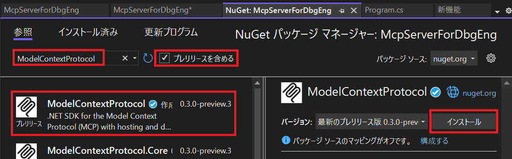
同様に、[Microsoft.Debugging.Platform.DbgX] を検索し、[Microsoft.Debugging.Platform.DbgX] パッケージをインストールします。今回はバージョン [20250225.2.0] を選択します。(20250415.1.0 や 20250612.2.0 は、本記事執筆事前では依存関係のパッケージが公開されていないため、プロジェクトがビルドできない可能性があります。)
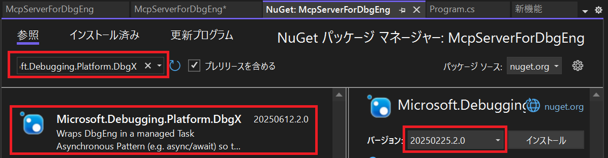
最後に、[Microsoft.Extensions.Hosting] を検索して [Microsoft.Extensions.Hosting] パッケージをインストールします。こちらのバージョンは最新の安定版で構いません。
ここまで完了したら、プロジェクトは下図のようになっているはずです。
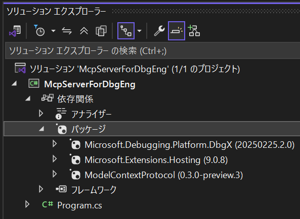
3. コーディング
次に、MCP サーバーの実装を行います。以下のコードを Program.cs ファイルに追加します。Microsoft.Debugging.Platform.DbgX パッケージの詳細については詳しく言及しませんが、端的に言えば WinDbg などが使用するデバッガー エンジンを C# から利用するためのライブラリです。本記事ではダンプ ファイルを開いてデバッガー コマンドを実行するために使用していますが、実行中のプロセスにアタッチすることも可能です。
1 | using DbgX; |
ソースコードは 100 行以上になりますが、概ね以下のような構成になっています。
- 20-27L: MCP サーバーの構成と起動処理
- 29L: デバッガー エンジンの同期のためのメッセージループの開始
- 48-76L: MCP サーバーのツールの実装 (デバッグ セッションの開始)
- 78-102L: MCP サーバーのツールの実装 (デバッグ コマンドの実行)
- 104-126L: MCP サーバーのツールの実装 (デバッグ セッションの終了)
なお、今回はサンプルとして細かなエラー処理やログ出力などを省略していますが、実際の実装では適切なエラー処理やログ出力を行うことをお勧めします。また、セキュリティの観点から入力の検証やサニタイズも行う必要があります。例えば、デバッガー エンジンは外部プログラムの実行や拡張機能の読み込みなど非常に多くのタスクを実行することができるため、利用できるコマンドを制限するなどの十分なセキュリティ対策が必要です。
4. テスト
事前準備
ビルドしたら、MCP サーバーを実行してみましょう。MCP サーバーの動作を確認する方法は様々ありますが、本記事では Visual Studio と Visual Studio Code の GitHub Copilot Chat から MCP サーバーに接続して動作確認してみます。Visual Studio や Visual Studio Code は、いくつかのファイル パスに MCP サーバーの構成ファイルを探しに行きます。今回は、プロジェクト ファイルと同じ階層に “.vscode” フォルダーを作成し、その配下に 以下のような内容の mcp.json ファイルを作成します。”command” プロパティはビルドした実行可能ファイルの完全パスに置き換えてください。定義済みの変数を使用することもできますが、使用するツールによって解釈が異なりますのでここでは完全パスを指定しています。今回 “inputs” プロパティは使用しませんが、”inputs” プロパティを省略した場合 Visual Studio 2022 のバージョンによっては MCP サーバーを検出できなくなるため注意してください。
1 | { |
次に、テストに使用するダンプ ファイルを生成するための設定を行います。今回は Windows Error Reporting (WER) を使用してクラッシュ ダンプ ファイルを取得します。以下のテキストをコピーして localdumps.reg のファイル名で保存し、インポートしてください。これにより、クラッシュ ダンプ ファイルが C:\Logs フォルダーに保存されるようになります。
1 | Windows Registry Editor Version 5.00 |
最後に以下のような C++ コードをコンパイルして実行し、クラッシュ ダンプ ファイルを生成します。このコードは意図的にヒープのバッファ オーバーフローを引き起こすものです。今回は x64|Debug の構成でビルドします。このとき、exe ファイルと一緒に出力されるシンボル ファイル (*.pdb ファイル) はデバッグで必要となりますので、削除しないでください。シンボル ファイルがないと、ダンプ ファイルの解析時にソース コードの行番号などの情報が得られません。(参考情報: シンボル ファイルと Visual Studio のシンボル設定を理解する)
1 |
|
実行したらアプリケーションがクラッシュし、C:\Logs フォルダーにクラッシュ ダンプ ファイルが生成されているはずです。
Visual Studio を使用して MCP サーバーに接続する
Visual Studio 2022 を起動して、MCP サーバーのプロジェクトを開きます。
GitHub Copilot Chat を開きます。
チャット モードで [エージェント] を選択し、ツールに DbgEng が含まれていることを確認してチェックを入れます。
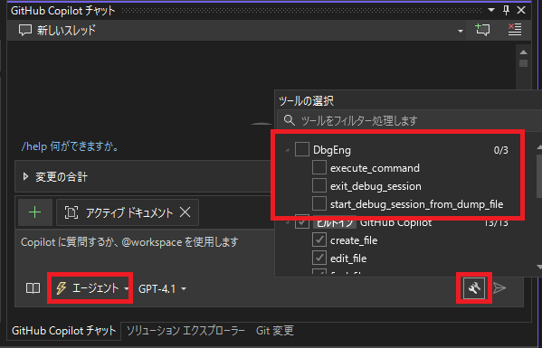
もしツールが見つからない場合は、MCP サーバーのプロジェクト ファイルと同じ階層にある “.vscode” フォルダーに
mcp.jsonファイルが正しく配置されているか確認してください。また、[出力] ウィンドウで出力元を [GitHub Copilot] に変更し、MCP サーバーの読み込みに失敗していないか確認してください。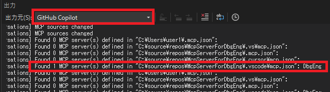
チャット欄に以下のように入力して、MCP サーバーに接続します。
1
C:\logs\xxxxxxxx.dmp を開いて解析し、原因と対処方法について教えてください。
AI からの応答を確認してみてください。AI の判断によっては MCP サーバーを使用しない可能性があるため、”DbgEng の MCP サーバーを使用して” など具体的に指示してみてください。MCP サーバーの実行を試行する場合は実行してよいか確認が求められれますので、正しいツールとコマンドを実行しようとしていることを確認してから許可してください。
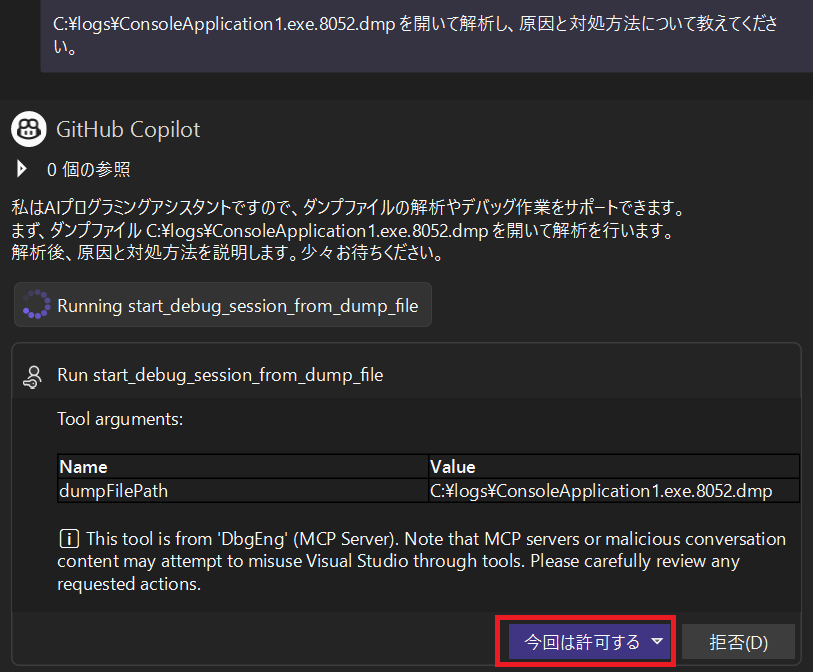
私の手元で実行した結果は以下のようになりました。
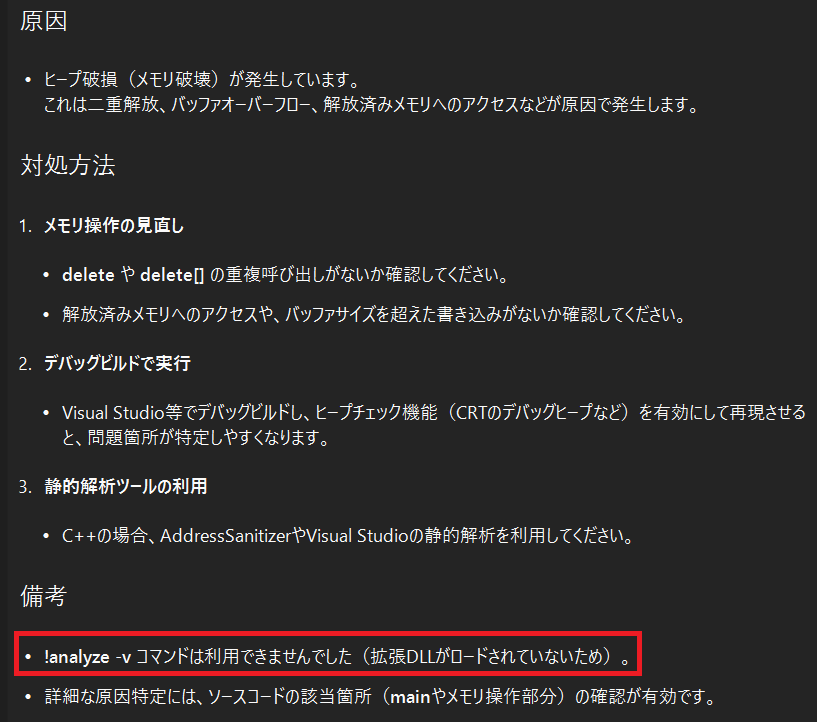
1 | ダンプファイルの解析結果をまとめます。 |
今回、!analyze -v コマンドが利用できなかったことが記載されていますが、これは Microsoft.Debugging.Platform.DbgX パッケージに !analyze 拡張機能を実装した exts.dll などが含まれていないことに起因しています。Debugging Tools for Windows がインストールされている場合は、C:\Program Files (x86)\Windows Kits\10\Debuggers\x64 配下のファイルをビルド出力先の amd64 フォルダーに、C:\source\repos\McpServerForDbgEng\McpServerForDbgEng\bin\Debug\net8.0-windows10.0.17763.0\x86 配下のファイルをビルド出力先の x86 フォルダーにそれぞれコピーすることで、!analyze コマンドを使用できるようになります。拡張機能の利用は必須ではありませんが解析する手段の選択肢が多くなりますので、興味がある方は公式ドキュメントをご確認いただき入手してください。
Visual Studio Code を使用して MCP サーバーに接続する
Visual Studio Code を起動します。
メニューから [ファイル] - [フォルダーを開く] を選択して MCP サーバーのプロジェクト ファイルがあるフォルダーを開きます。
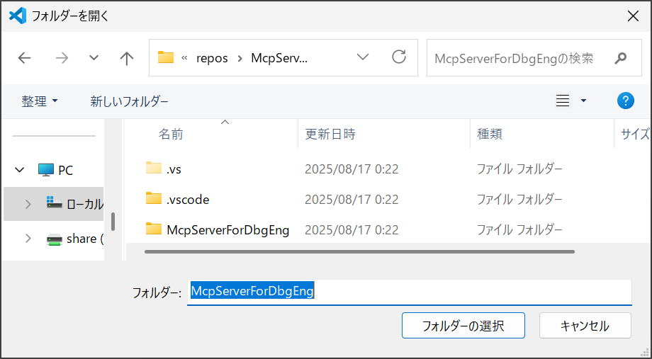
“.vscode\mcp.json” を開くと MCP サーバーの操作のラベルが表示されますので、[起動] をクリックします。[その他] - [出力の表示] を選択すると MCP サーバーの出力が表示されますので、あわせて確認しておくとよいでしょう。
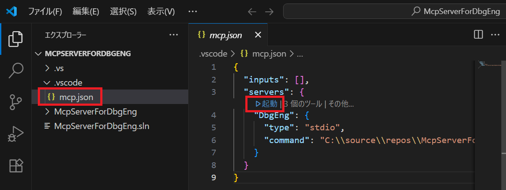
GitHub Copilot Chat を開き、チャット モードで [エージェント] を選択してツールに DbgEng が含まれていることを確認します。
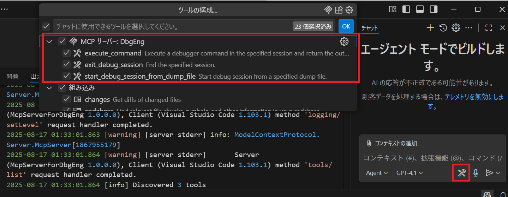
チャット欄に以下のように入力して、MCP サーバーに接続します。
1
#DbgEng C:\logs\xxxxxxxx.dmp を開いて解析し、原因と対処方法について教えてください。
AI からの応答を確認してみてください。MCP サーバーの実行を試行する場合は実行してよいか確認が求められれますので、正しいツールとコマンドを実行しようとしていることを確認してから許可してください。
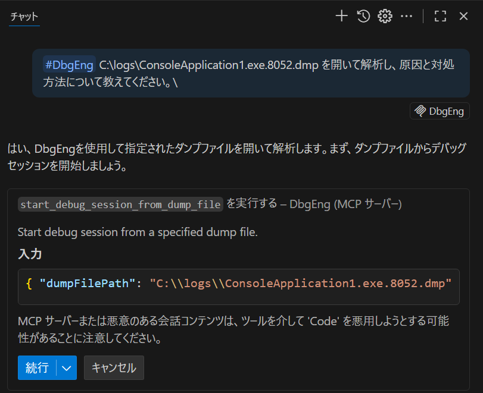
私の手元で実行した結果は以下のようになりました。なお、選択している AI モデルにも依存する点や、処理の都度 AI が異なる応答を返す可能性がある点に注意してください。期待した応答が得られない場合は、追加のコンテキストや指示を与えることで良い結果が得られる可能性があります。また、Visual Studio Code の場合は入力や出力も確認することができますので、実際にどのようなデバッガー コマンドが実行されたのかを確認することもできます。
1 | kemats: #DbgEng C:\logs\ConsoleApplication1.exe.8052.dmp を開いて解析し、原因と対処方法について教えてください。 |
5. デバッグ
MCP サーバーを直接実行してデバッグしてもよいのですが、AI エージェントから呼び出されたときの振る舞いを確認したい場合もあると思います。MCP サーバーの方式によってデバッグ方法は異なりますが、ローカル実行の場合に使用されることが多い stdio の場合、Visual Stuio や Visual Studio Code からサーバー プロセスが起動された後は実行中のまま標準入力を待ち受ける状態になっています。そのため、実行中のサーバー プロセスにアタッチすることでデバッグすることが可能です。ここでは、Visual Studio Code から起動された MCP サーバーにアタッチしてデバッグする手順を紹介します。
Visual Studio Code から MCP サーバーを起動します。
Visual Studio 2022 を起動し、MCP サーバーのプロジェクトを開きます。
メニューから [デバッグ] - [プロセスにアタッチ] を選択します。
プロセスの一覧から、mcp.json で指定した MCP サーバーのプロセスを選択して [アタッチ] ボタンを押下します。今回は “McpServerForDbgEng.exe” という名前になっているはずですが、dotnet.exe など別のホスト プロセスが起動している場合は、ホスト プロセスを選択する必要がありますので注意してください。
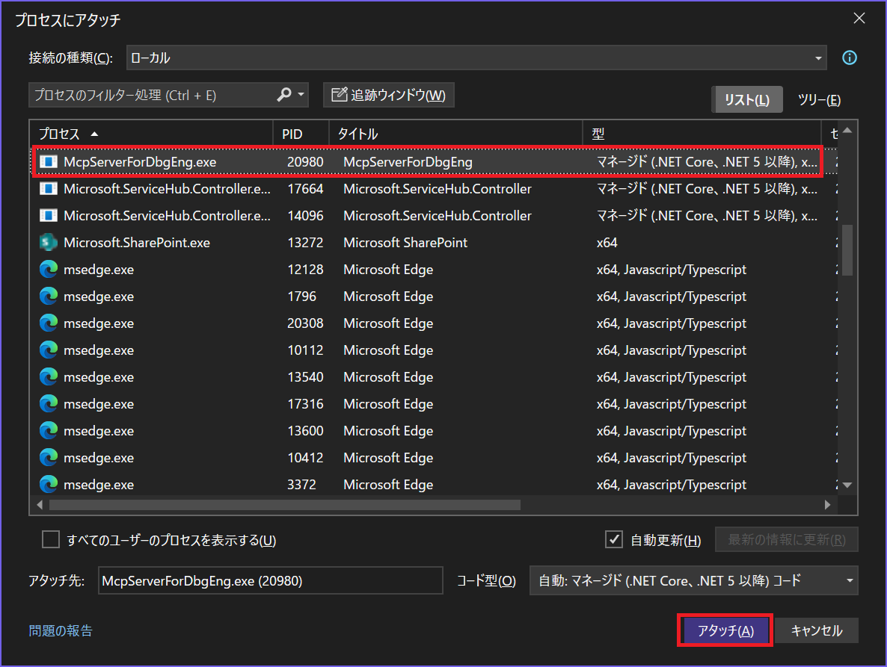
McpServerTool 属性を指定してツールとして公開しているメソッドにブレークポイントを設定します。今回は StartDebugSessionFromDumpFile メソッドにブレークポイントを設定します。
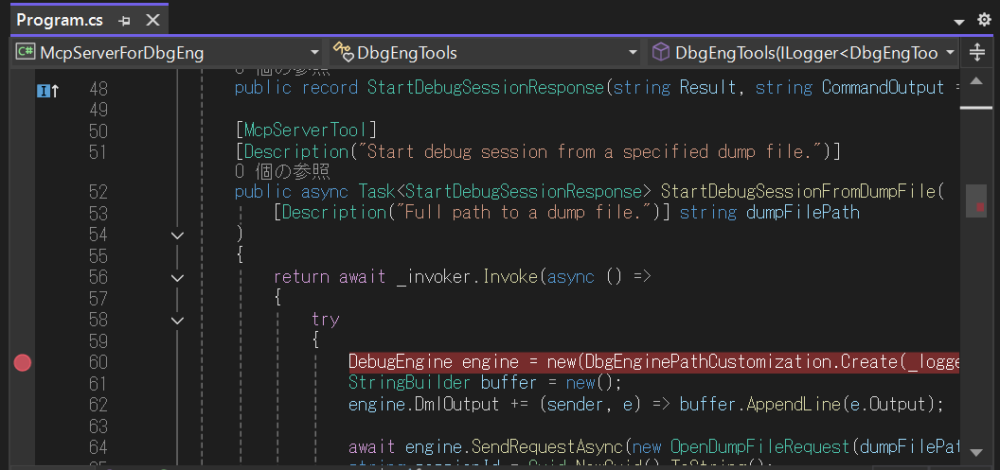
Visual Studio Code から GitHub Copilot Chat を使用してツールを呼び出します。今回は以下のように指示してみます。
1
#DbgEng C:\Logs\xxxxxxxx.dmp を開いてください。
Visual Studio 2022 でブレークポイントがヒットすることを確認します。この後は、呼び出し履歴や変数を確認したり、ステップ実行するなどの通常のデバッグ操作を行うことができます。
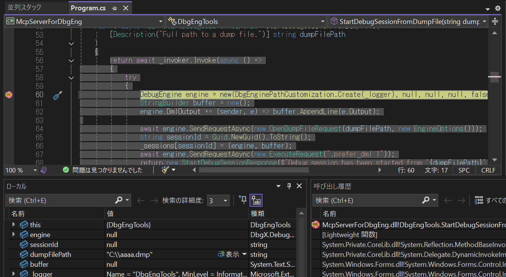
まとめ
今回は、C# を使用して MCP サーバーを作成し、AI エージェントにクラッシュ ダンプ ファイルを解析させる方法について紹介しました。MCP サーバーは AI エージェントが外部のリソースと連携するための重要な仕組みであり、C# での実装も比較的簡単に行うことができます。アプリケーションが MCP サーバーを提供することで、AI エージェントがアプリケーションの機能やリソースにアクセスしてタスクを実行できるようになります。本記事が開発者の皆様の MCP サーバーの利用や実装の参考になれば幸いです。
本ブログの内容は弊社の公式見解として保証されるものではなく、開発・運用時の参考情報としてご活用いただくことを目的としています。もし公式な見解が必要な場合は、弊社ドキュメント (https://learn.microsoft.com や https://support.microsoft.com) をご参照いただくか、もしくは私共サポートまでお問い合わせください。